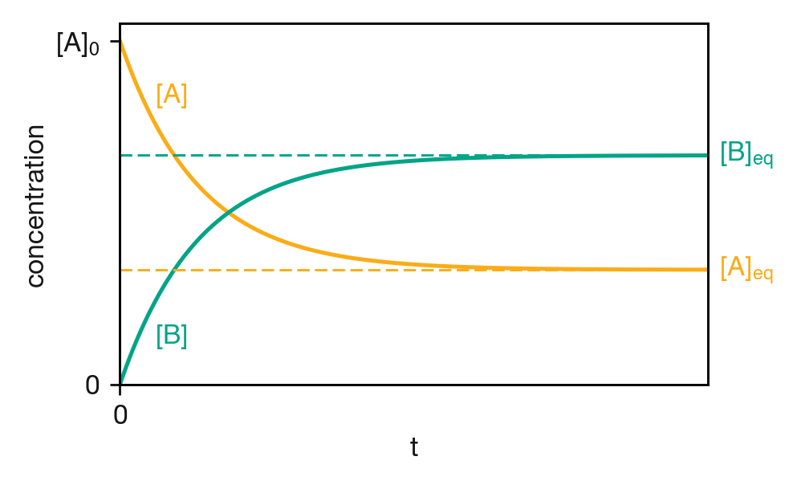
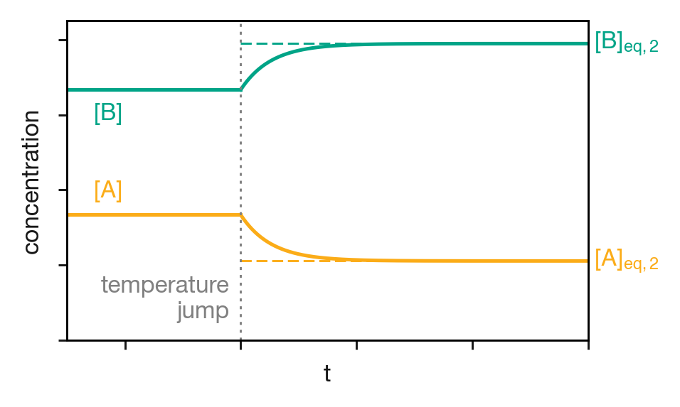

C Relaxation Methods and the Approach to Equilibrium
In Lecture 4, we showed that for a reversible reaction A ⇌ B at equilibrium, the equilibrium constant equals the ratio of the forward and reverse rate constants: \(K_\mathrm{eq} = k_1/k_{-1}\). But we did not ask how quickly the system reaches equilibrium, or what the concentration profiles look like along the way. The material below is not examinable, but it reveals a surprising result: the rate of approach to equilibrium depends on the sum \(k_1 + k_{-1}\), not on either rate constant alone. It also introduces an experimental technique for measuring individual rate constants.
C.1 The Approach to Equilibrium
Consider the reversible reaction
\[\mathrm{A} \underset{k_{-1}}{\stackrel{k_1}{\rightleftharpoons}} \mathrm{B}\]
with rate equation
\[\frac{\mathrm{d}[\mathrm{A}]}{\mathrm{d}t} = -k_1[\mathrm{A}] + k_{-1}[\mathrm{B}]\]
If we start with pure A (\([\mathrm{A}]_0 = a\), \([\mathrm{B}]_0 = 0\)), mass balance gives \([\mathrm{B}] = a - [\mathrm{A}]\) at all times, so we can write everything in terms of \([\mathrm{A}]\) alone:
\[\frac{\mathrm{d}[\mathrm{A}]}{\mathrm{d}t} = -k_1[\mathrm{A}] + k_{-1}(a - [\mathrm{A}]) = k_{-1}a - (k_1 + k_{-1})[\mathrm{A}]\]
This has the form \(\mathrm{d}y/\mathrm{d}t = c - by\), which can be solved by substituting \(u = c - by\) and separating variables. With the initial condition \([\mathrm{A}]_0 = a\), the result is:
\[\begin{equation} [\mathrm{A}]_t = \frac{a}{k_1 + k_{-1}}\left(k_{-1} + k_1\,\mathrm{e}^{-(k_1 + k_{-1})t}\right) \tag{C.1} \end{equation}\]
As \(t \to \infty\), the exponential vanishes and \([\mathrm{A}]\) settles to a constant value:
\[[\mathrm{A}]_\mathrm{eq} = \frac{k_{-1}\,a}{k_1 + k_{-1}}\]
We can verify this is consistent with our equilibrium condition. Since \([\mathrm{B}]_\mathrm{eq} = a - [\mathrm{A}]_\mathrm{eq} = k_1 a/(k_1 + k_{-1})\), the ratio is:
\[\frac{[\mathrm{B}]_\mathrm{eq}}{[\mathrm{A}]_\mathrm{eq}} = \frac{k_1}{k_{-1}} = K_\mathrm{eq}\]
exactly as expected. Starting from pure A, \([\mathrm{A}]\) falls exponentially towards \([\mathrm{A}]_\mathrm{eq}\) while \([\mathrm{B}]\) rises from zero towards \([\mathrm{B}]_\mathrm{eq}\) (Figure C.1). Both concentrations approach their final values at the same rate, \((k_1 + k_{-1})\). Both the forward and the reverse reaction contribute to how quickly equilibrium is established. Even if one rate constant is much smaller than the other, it still affects the relaxation rate.

Figure C.1: Concentration profiles for the reversible reaction A ⇌ B, starting from pure A. Both concentrations approach their equilibrium values exponentially, with a rate constant equal to the sum \(k_1 + k_{-1}\). The dashed lines show the equilibrium concentrations \([\mathrm{A}]_\mathrm{eq}\) and \([\mathrm{B}]_\mathrm{eq}\).
C.2 The Temperature Jump Experiment
The fact that the relaxation rate is \(k_1 + k_{-1}\) has a practical consequence. If we can watch a system relax towards equilibrium and measure the rate, we obtain the sum of the rate constants. Combining this with the equilibrium constant (which gives their ratio) lets us determine \(k_1\) and \(k_{-1}\) individually.
The difficulty is that we cannot simply mix A and watch it equilibrate — for fast reactions, the mixing itself takes longer than the relaxation. Relaxation methods sidestep this problem by starting with a system that is already at equilibrium and then suddenly changing the conditions so that the equilibrium position shifts. The system then relaxes to a new equilibrium, and we monitor the concentrations as it does so.
The most common approach is the temperature jump (or T-jump) experiment. A solution at equilibrium is heated by a few degrees in a very short time (typically microseconds), usually by discharging a high-voltage capacitor through the solution or by a pulse from an infrared laser. The rate constants \(k_1\) and \(k_{-1}\) are temperature-dependent (as discussed in Lecture 11), so the equilibrium position shifts. The concentrations, still at their old equilibrium values, are now out of equilibrium, and we can follow the relaxation spectroscopically (Figure C.2).

Figure C.2: Schematic of a temperature jump experiment. Before the jump, the system sits at equilibrium with concentrations \([\mathrm{A}]_{\mathrm{eq},1}\) and \([\mathrm{B}]_{\mathrm{eq},1}\). The increase in temperature shifts the equilibrium position, and the concentrations relax exponentially towards their new equilibrium values \([\mathrm{A}]_{\mathrm{eq},2}\) and \([\mathrm{B}]_{\mathrm{eq},2}\), with a relaxation time \(\tau = 1/(k_1' + k_{-1}')\).
C.3 Analysing the Relaxation
Suppose the system is initially at equilibrium at temperature \(T_1\), with concentrations \([\mathrm{A}]_{\mathrm{eq},1}\) and \([\mathrm{B}]_{\mathrm{eq},1}\) satisfying:
\[k_1[\mathrm{A}]_{\mathrm{eq},1} = k_{-1}[\mathrm{B}]_{\mathrm{eq},1}\]
After the temperature jump, the rate constants change to new values, which we write as \(k_1'\) and \(k_{-1}'\) to distinguish them from the original values at \(T_1\). The system relaxes towards new equilibrium concentrations \([\mathrm{A}]_{\mathrm{eq},2}\) and \([\mathrm{B}]_{\mathrm{eq},2}\) satisfying:
\[k_1'[\mathrm{A}]_{\mathrm{eq},2} = k_{-1}'[\mathrm{B}]_{\mathrm{eq},2}\]
To follow the relaxation, we define the deviation of \([\mathrm{A}]\) from its new equilibrium value:
\[x = [\mathrm{A}] - [\mathrm{A}]_{\mathrm{eq},2}\]
so that \([\mathrm{A}] = [\mathrm{A}]_{\mathrm{eq},2} + x\) and, by mass balance, \([\mathrm{B}] = [\mathrm{B}]_{\mathrm{eq},2} - x\). At the moment of the temperature jump, \(x\) has some initial value \(x_0\); as the system reaches its new equilibrium, \(x \to 0\).
Substituting into the rate equation (now with the new rate constants \(k_1'\) and \(k_{-1}'\)):
\[\begin{align} \frac{\mathrm{d}x}{\mathrm{d}t} &= \frac{\mathrm{d}[\mathrm{A}]}{\mathrm{d}t} = -k_1'[\mathrm{A}] + k_{-1}'[\mathrm{B}] \nonumber \\ &= -k_1'([\mathrm{A}]_{\mathrm{eq},2} + x) + k_{-1}'([\mathrm{B}]_{\mathrm{eq},2} - x) \nonumber \\ &= \underbrace{\left(-k_1'[\mathrm{A}]_{\mathrm{eq},2} + k_{-1}'[\mathrm{B}]_{\mathrm{eq},2}\right)}_{= \, 0 \text{ (equilibrium condition)}} - (k_1' + k_{-1}')x \nonumber \end{align}\]
The constant terms cancel exactly because \([\mathrm{A}]_{\mathrm{eq},2}\) and \([\mathrm{B}]_{\mathrm{eq},2}\) satisfy the equilibrium condition at the new temperature. What remains is:
\[\begin{equation} \frac{\mathrm{d}x}{\mathrm{d}t} = -(k_1' + k_{-1}')x \tag{C.2} \end{equation}\]
This is just first-order decay in the deviation \(x\). The solution is:
\[\begin{equation} x(t) = x_0\,\mathrm{e}^{-t/\tau} \tag{C.3} \end{equation}\]
where the relaxation time \(\tau\) is:
\[\begin{equation} \frac{1}{\tau} = k_1' + k_{-1}' \tag{C.4} \end{equation}\]
This is the same result we found for the approach to equilibrium from pure A: the relaxation rate is always the sum of the forward and reverse rate constants. The physics is the same — only the starting conditions differ.
C.4 Extracting Individual Rate Constants
The relaxation time gives us the sum of the rate constants at the new temperature. The equilibrium constant at the same temperature gives us their ratio:
\[K_{\mathrm{eq}} = \frac{k_1'}{k_{-1}'}\]
Two equations in two unknowns. Solving:
\[k_1' = \frac{K_{\mathrm{eq}}}{\tau(1 + K_{\mathrm{eq}})} \qquad k_{-1}' = \frac{1}{\tau(1 + K_{\mathrm{eq}})}\]
The power of this approach is that a single measurement of \(K_\mathrm{eq}\) tells us the ratio of the rate constants but not their individual values, and a single relaxation experiment tells us their sum but not their individual values. Combining the two gives us both \(k_1\) and \(k_{-1}\) separately. For the simple A ⇌ B equilibrium considered here, the analysis is exact. For more complex equilibria (such as bimolecular reactions), the same general approach applies, although the relationship between \(\tau\) and the rate constants takes a different form.